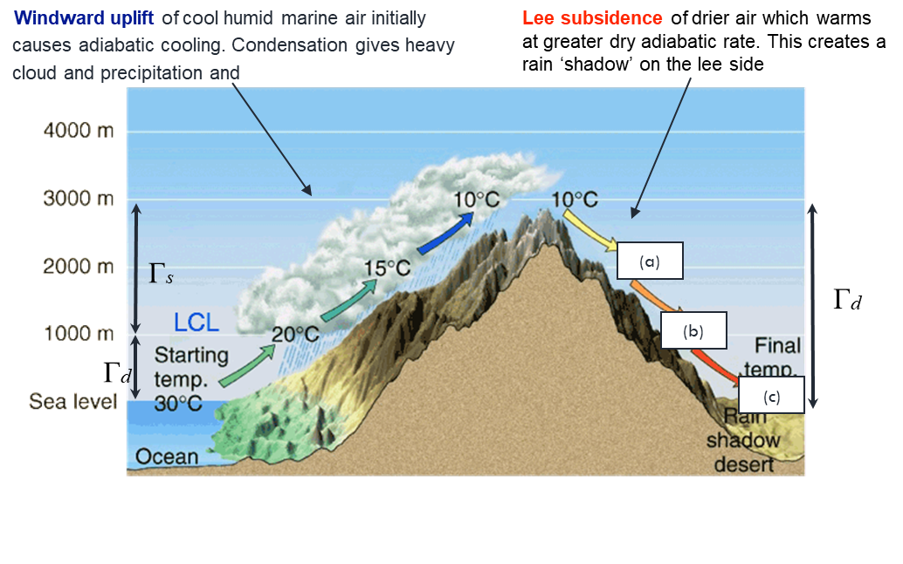
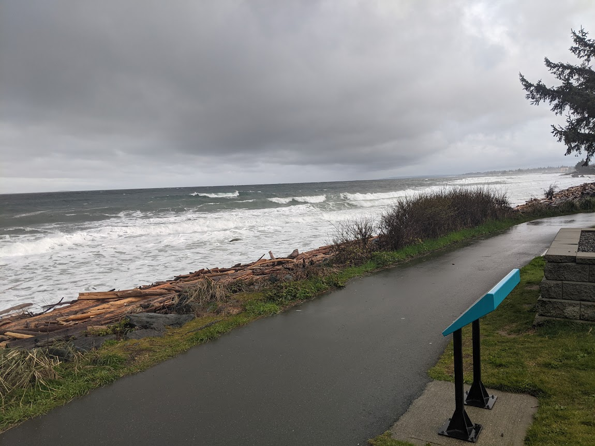

| X0 | X1 |
|---|---|
| Resistances | Range of values (s m-1) |
| Laminar boundary layer | 450 (calm) – 20 (wind) |
| Fur & feathers | 1500 (calm) – 150 (wind) or 100 (wet) |
| Skin & subcutaneous tissue | 100 (vasoconstricted) – 50 (vasodilated) |
Animal microclimate: basic principles, wind chill and thermal regulation
Learning Objectives
- • Describe how animals regulate their energy & water balances using behavioural and physiological mechanisms
- • Know the difference in the energy balance terms of warm vs. cold blooded animals
- • Explain the wind chill factor and index
- • Explain the term metabolic heat production and basal metabolic rate, and describe how the metabolic rate of animals varies with activity & the effect of ambient temperature.
Animal microclimate
- Microclimate experienced by an animal is determined by the interaction of the animal with its physical environment: interaction via energy and water exchange.
- Animals can regulate their energy and water balances with behavioural (hibernating, crowding) and physiological (perspiration, shivering, reducing body temp, growing/shedding fur) mechanisms.
- Arctic animals have thick fur coats and some hibernate at reduced body temperature to conserve body heat (e.g. ground squirrels). Desert animals have adapted to lose little water, e. g. the kangaroo rat, which can exhale air at ambient temperature thereby reducing water vapour loss.
Poikilotherms and Homeotherms compared
- The temperature of plants and cold blooded animals (poikilotherms) is determined by the environment alone and always responds to changes in that environment (as in the leaf temperature equation in previous lecture).
- The deep body temperature of warm blooded animals (homeotherms) is maintained almost constant by physiological mechanisms which alter the rate of heat production by metabolism and dissipation by sensible and latent heat loss.
- The hypothalamus has an important temperature sensing
- and regulating function, i.e. like a thermostat.
- The average temperature for healthy adult humans is 36.8°C (98.2°F)
36.8 ℃
Deep body temperature of a human
Poikilotherms and Homeotherms compared
- Poikilotherms, such as lizards, tortoises, and bees appear to prefer environments where exposure to solar radiation raises body temperature to between 30 and 35 ºC, close to the range in which homeotherms operate.
Energy balance of animals
- The energy balance equation for an animal can be expressed as
- Q* + QM = QH + QE + QG +QF + △Qs
- where all terms are expressed as a flux per unit of the total body surface area in W m-2 and:
- -Q* is the net radiation gain
- -QM is the metabolic heat production within the animal
- -QH and QE are the sensible and latent heat losses, respectively, to the atmosphere
- -QG is the heat conducted to the ground
- -QF is heat loss in feces and urine
- △Qs is the rate of heat storage as a result of temperature change of the animal’s body (~0 W m-2 in the case of a homeotherm).
Net radiation
- Daytime
- A difficulty in calculating Q* in sunny conditions: direct solar radiation strikes only a fraction of the total body surface, while absorbed longwave irradiance and longwave emittance occur over most of the body surface.
- The ratio of the projected or shadow area (Ap) of the animal to the total surface area (A) of animal is the animal shape factor (S). It is used to ‘weight’ the direct beam solar irradiance (i. e. the flux density on a surface perpendicular to the sun’s rays) when calculating K↓ for the animal’s total body surface.
Net radiation to the animal (dealing with direct K↓)
- The following are examples of shape factors:
- a spherical animal (e.g. a chicken)
- Ap ≈ πr2, A ≈ 4πr2 & S ≈ Ap/A ≈ πr2/ (4πr2) = 0.25
- a horizontal cylindrical animal (e.g. a deer)
- Ap ≈ 2rl, A ≈ 2πrl & S ≈ Ap/A ≈ 2rl/(2πrl) = 1/π = 0.32
- vertical cylindrical animal (e.g., a standing human)
- Ap ≈ πr2 and A ≈ 2πrl, S ≈ Ap/A ≈ r/(2l)
- = 0.20m/(2 x 2m) = 0.05


Net radiation
- This shows there is a much lower radiation load on a bipedal animal than a quadrupedal animal.
- This may be one reason humans ended up walking on two legs in the African savannah 4 million years ago: a quadruped would need 2.5 litres of water/day, while a biped would need only 1.5 litre/day.
Net radiation to the animal
- Nighttime
- At night, an animal loses heat as a result of the longwave emittance from its body. The net radiative loss (negative) from a deer in a clearing is greater than when it is in a forest stand. By providing more longwave irradiance than the sky (remember the “sky view factor”) and reducing the wind speed, the stand provides thermal cover for the deer.


Sensible heat exchange (QH)
- Sensible heat is lost from warm blooded animals except when air temperature > deep body temperature (≈ 37°C). Respiratory sensible heat loss is generally small. Most is lost through the skin. Sensible heat loss can be expressed as
- C is the heat capacity of air (1200 J m-3 °C-1)
- Tb is the deep body temperature
- Ta is the ambient air temperature
- rb is the laminar boundary layer resistance to heat loss
- rfur is the resistance of the fur (or feathers)
- rtiss is the resistance of the skin and subcutaneous tissue.
- The units of these resistances are s m-1.

Sensible heat exchange (QH)
- The following table gives the expected range of values of these resistances. Note that 10 mm of still air has a resistance of 470 s m-1.
Sensible heat exchange (QH)

Test your knowledge
- When air temperature exceeds 37 °C, a human being in relatively calm conditions, i.e., very low wind speed, would feel (select correct answer):
- Less comfortable than if there was a breeze
- More comfortable than if there was a breeze
- The difference in comfort wouldn’t be noticeable
Wind chill
- This is the effect of the wind in increasing heat loss from animals. It is important in cold conditions when the wind makes it feel colder than is indicated by the air temperature alone.
- Indices of heat loss:
- Wind chill factor or rate (QH) [W m-2]
- Wind chill index (effective temperature if conditions were calm) [°C] This is mainly used!
Wind chill factor
- The wind chill factor, the sensible heat loss from exposed human skin, is given by:
- QH = C(Ts – Ta)/rb
- where Ts is surface skin temperature.
Wind chill index
- The wind chill index is the air temperature (Tc) required at a low standard wind speed to cause the same heat loss as at the actual wind speed, i.e.,
- QH = C(Ts – Tc)/rb std
- where rb std is the LBL resistance at a standard low wind speed, usually 1.3 m s-1.
- Eliminating QH between the 2 QH equations and assuming Ts ≈ 33°C, we have
- Tc = 33 – (rb std/ rb)(33 – Ta)
- For example, if Ta =-20°C and wind speed 10 m s-1, rb std/rb = 1.26, so Tc = -34 °C
-48 ℃
Wind chill index
- Graphical method of obtaining Tc (curved lines, ℃). Lines calculated using an equation similar to the previous Tc equation
- If Ta is -30 ℃ & wind speed is 40 km/h (11 m/s), then Tc = -48 ℃.
Wind chill index
- Approximate Frostbite Thresholds:
- Risk of frostbite in prolonged exposure: wind chill below –25 ℃
- Frostbite possible in 10 minutes at -35 ℃ (warm skin, suddenly
- exposed. Shorter time if skin is cool at the start.)
- Frostbite possible in less than 2 minutes at -60 ℃ (warm skin, suddenly exposed. Shorter time if skin is cool at the start.)
Latent heat loss (QE)
- The loss of latent heat occurs as a result of evaporation of water on the skin and in the lungs (respiratory latent heat loss).
- The following graph shows the effect of environmental temperature on QE from animals. Sheep, cattle and swine lack the kind of glands that allow humans to sweat profusely; however, they compensate by panting.
Heat loss by conduction (QG)
- When an animal is standing, conduction losses (through the feet) are small. However, these losses can be large when the animal is lying down.
- QG strongly depends on the thermal conductivity of the material the animal is lying on. A deer lying on a well-drained litter-covered forest floor will lose much less heat than on a saturated mineral soil. Muddy conditions for cattle have a bigger impact than cold air temperatures
- For a difference between body temperature (Tb) and ambient temperature of 20°C, a pig lying on concrete, wood and polystyrene floors will lose 30, 15 and 5 W m-2, respectively, by conduction.
Changes in sensible heat storage (△Qs)
- Homeotherms attempt to keep the quantity of sensible heat stored in their bodies constant, i.e., keep Tb constant. They keep △Qs very small.
- Some desert animals allow Tb to
- increase during the daytime. Thus less water is used for evaporative cooling. A dehydrated camel will allow Tb to rise from 34 °C to 40°C between morning and afternoon.
Metabolic heat production (QM)
- This is the conversion of the chemical energy of food consumed by the animal to heat energy.
- Part is converted to tissue, milk and eggs or is excreted. The metabolic rate (QM) depends on body size, age, activity, diet and microclimate.
- QM of an animal resting in a stress free environment is called the basal metabolic rate (QMB).
- QMB of poikilotherms is about 1/20 of the value for homeotherms of the same size.
Basal metabolic rate (QMB)
- bper body
- mper unit body mass
- aper unit body surface area
| X0 | X1 | X2 | X3 | X4 | X5 |
|---|---|---|---|---|---|
| M | |||||
| (kg) | A | ||||
| (m2) | QbMB | ||||
| (W) | QmMB | ||||
| (W kg-1) | QaMB | ||||
| (W m-2) | |||||
| Mouse | 0.02 | 0.004 | 0.2 | 10 | 50 |
| Human | 80 | 2 | 100 | 1.25 | 50 |
| Cow | 400 | 6 | 300 | 0.75 | 50 |
Basal metabolic rate (QMB)
- The table shows that the basal metabolic rate of animals is proportional to their body surface area, i.e., expressed on a per unit body surface area basis it’s constant.
- For example, the body surface area of a cow is about 6 m2, so QMB= 300 W/6 m2 = 50 W m-2.
- 50 W m-2 has been found to be approximately constant for mammals ranging in size from a mouse to a horse!
Basal metabolic rate (QMB)
- QMB per unit body mass decreases with increasing body mass. For example, for a mouse, person and cow it is roughly 10, 1.25 and 0.75 W kg-1, respectively.
- This is because the ratio of surface area to volume (or mass) for an animal also decreases with increasing animal size.
Metabolic rate of an active animal (QM)
- QM can become 10 times QMB during activity (e.g. sprinting at full speed) as a result of metabolic heat produced by the muscles. It can approach 500 W m-2. We can write:
- QM = QMB + QMm Remember QMB ≈ 50 W m-2
- where QMm is due to muscular activity.
| X0 | X1 |
|---|---|
| Activitity | QM |
| Resting | 50 |
| Walking | 100-400 |
| Sports | 200-500 |

Metabolic rate (QM) - effect of environmental temperature

Metabolic rate (QM) - effect of environmental temperature
- The previous graph showed the effect of environmental temperature on QM. An animal can maintain a constant Tb throughout the zone of thermal regulation (ZTR). In the zone of minimum metabolism, the animal is operating at its basal metabolic rate. In the zone of least thermal regulatory effort (ZLTRE), remains at a minimum value but expends the least effort.
- Incipient hypothermia occurs at the lower end of the ZTR; incipient hyperthermia occurs near the upper end.
Test your knowledge
- What are the two terms in the energy balance equation for a warm blooded animal that distinguishes it from a plant or cold blooded animal? (select correct answer):
- A. Net radiation and sensible heat flux
- B. Metabolic rate and change in sensible heat storage
- C. Metabolic rate and latent heat flux
Take home poi ts
- Animal energy balance includes metabolic heat production (QM) in addition to Q*, QH, QE, and QG; for homeotherms △Qs ≈ 0
- Sensible heat loss (QH) determined by 3 resistances: LBL, fur/feathers/clothes and subcutaneous tissue
- The wind chill index (Tc) is the air temperature required to cause the same heat loss at a standard low wind speed
- Human latent heat loss increases strongly with temperature
- Basal metabolic heat production (QMB) is remarkably constant at 50 W m-2 (body surface area basis) for all homeotherms
- Animals maintain a constant Tb throughout the zone of thermoregulation (ZTR) ; outside that hypo or hyperthermia occurs